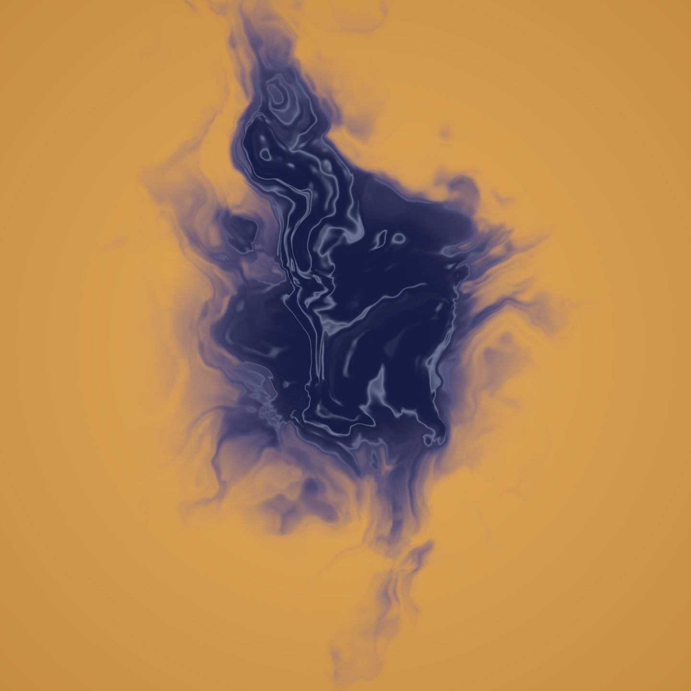
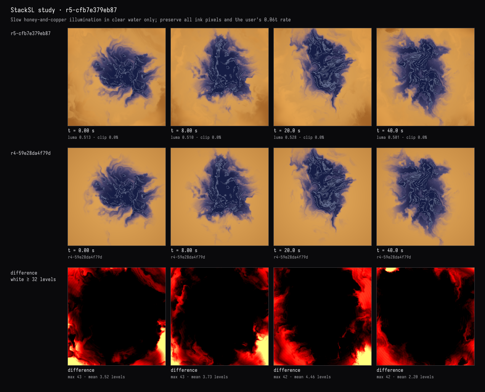
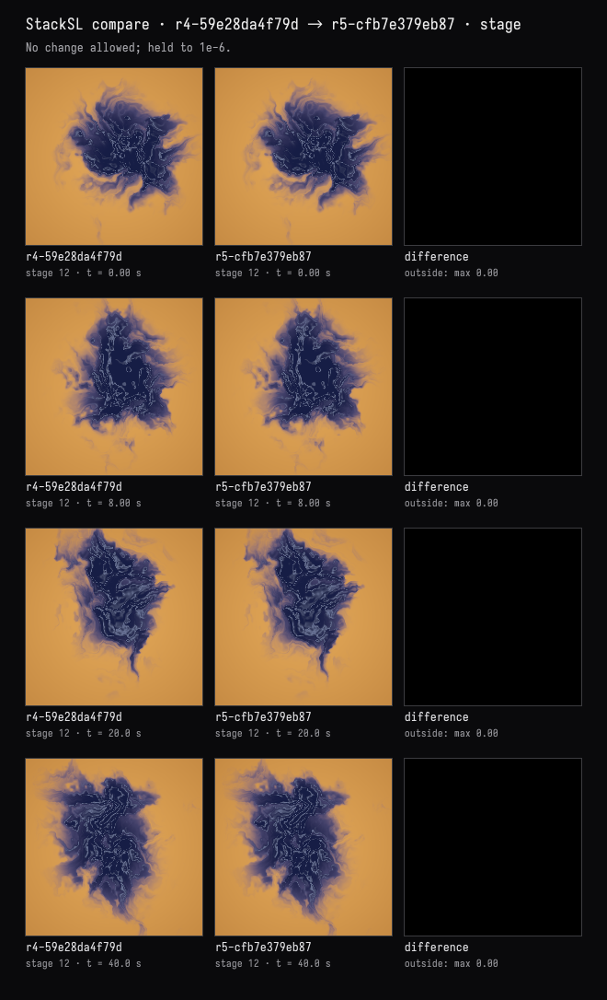
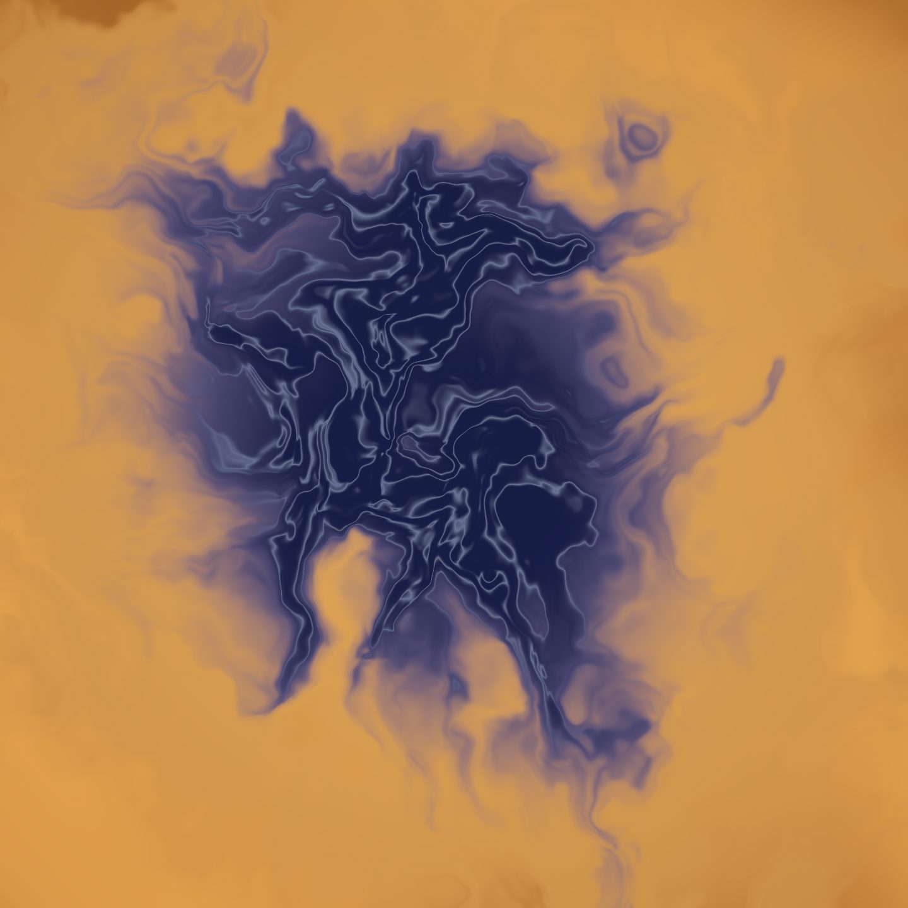

Light in the water, ink untouched
The recorded exchange: the request, the tool activity, every image the tools returned to the model, and its reply. Expand tool activity to read the steps; open an image to see it full size.
- Adopted variant B in the study card →
r3-c4e66cc017b5“adopt variant B: Fine threads: narrow blue-lilac contour filaments, with deep indigo between them.” - Moved knob 7 to 0.06 with its slider in the study card and pressed Keep →
r4-59e28da4f79d“numbers set by hand: k7 0.035→0.06”
I adopted B in the card and sped the drift up myself with a slider. The amber water still feels like one flat tone. Give it a slow warmth — light moving through the water — without changing the ink at all, and show me the ink is untouched.
Tool activity · 9 steps
Starting AI conversation
InspectStackSLStudy finished (3 ms)
CaptureRenderWindowRequest finished (36 ms)
Waiting for model
Evaluating image comparison process
Evaluating image comparison process
I'm looking into how to automatically compare images and patch differences. I need to test a subset of ink with an exact additional mask, using the allowedRegion and focusing on square areas. It would be interesting to compare stages after explicitly selecting with an allowedRegion of [0,0,1,1]. I'm wondering if I can create a diagnostic variant that subtracts the original masked images from an expected black stage using the compare stage as a baseline.
Next tool:
PatchStackSLStudyPatchStackSLStudy finished (1295 ms)
CompareStackSLStudy finished (627 ms)
CaptureRenderWindowRequest finished (537 ms)
Completed




Added slow honey highlights and copper shadows through the clear water. The live view now has soft, uneven illumination around the indigo bloom.
Ink preservation checks:
- Your 0.06t speed and B’s threads are unchanged.
- The original rendering stage matched exactly at 0, 8, 20, and 40 seconds: maximum difference 0.
- The final lighting explicitly keeps the original color wherever any ink is present—including faint edges. The final-image difference maps above show changes in the water, with the ink region black.
Compiled and validated without warnings or invalid pixels.